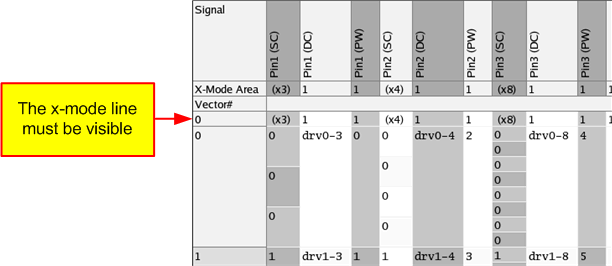
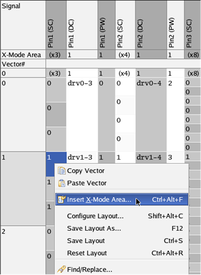
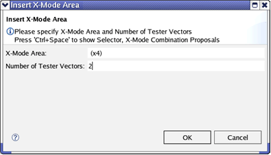
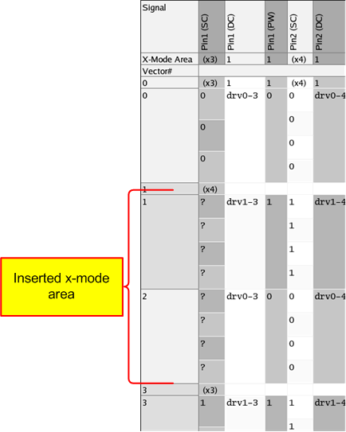
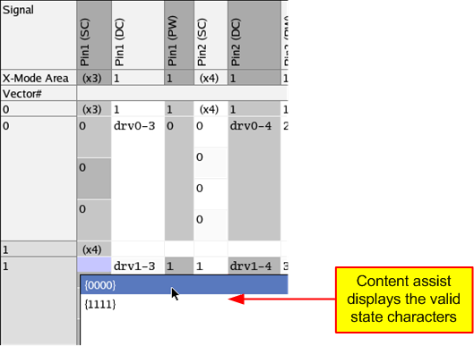
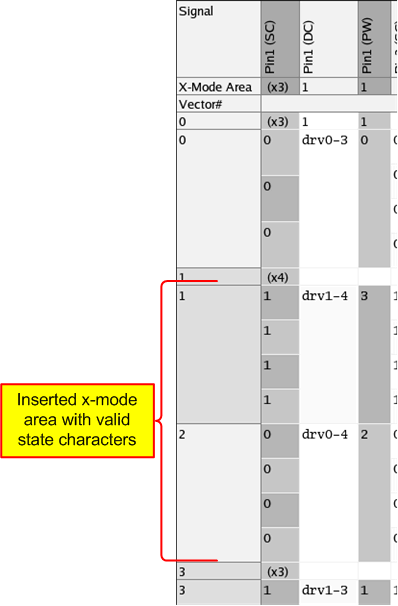
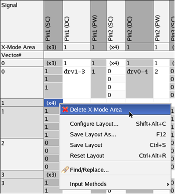

Changing the x-mode area
About this task
This topic describes how to change the x-mode area of a signal in the Pattern Editor on the basis of the example described in xN-mode example.
Before you begin
Make sure:
- The Pattern Editor is open with the pattern you want to edit, see Opening the Pattern Editor.
- The signal whose format you want to change is displayed in state character (SC) format, see Configuring the layout of the Pattern Editor.
- You have defined different x-modes in the wavetable.
Procedure
-
In the Pattern Editor check, whether or not the x-mode line is visible as shown in the
figure below.

If the x-mode line is not visible, click the button (Hides all x-mode areas in the current editor).
-
In the Pattern Editor, in the column that displays the signal in state character (SC)
format, highlight the cell, denoting the begin of the new x-mode area, right-click and select
Insert X-Mode Area... .

You can also highlight the area whose x-mode you want to change and then right-click and select Insert X-Mode Area... . Thus the Number of Tester Vector field in the Insert X-Mode Area dialog box will be preset.
-
In the insert x-mode area window do the following:
- Set the cursor in the field X-Mode Area: and activate the content assist by pressing Ctrl+Spacebar. All x-modes defined in the wavetable are displayed. Select the x-mode and press Enter.
- In the field Number of Tester Vectors: type the number of tester vectors as displayed in the Vector# column. This determines the length of the new x-mode area.
-
Click OK.
In the example described here, an x4-mode area with a length of two tester vectors is inserted. This means that the tester vector 1 and 2 will be changed from x3-mode to x4-mode. When you change the x-mode area, no new tester vector cells will be inserted.

-
The new x-mode is displayed:

In the inserted x-mode area question marks are displayed instead of state characters. The vector memory still contains the waveform DC/DC power units 1 and 0, but there is no entry for these DC/DC power units related to the x4-mode in the statemap section of the wavetable. Thus the Pattern Editor cannot translate these DC/DC power units for the x4-mode and displays question marks.
-
To insert valid state characters double-click in the state character column (SC) the cell
you want to edit and press Backspace. A content assist will be activated, which displays a list
box containing the valid values.

The content assist displays the state character combinations with curly braces, if not all combinations of 0,1,L,H,X,... are defined in the statemap section of the wavetable.
If all combinations of 0,1,L,H,X,... are defined in the statemap section of the wavetable, the content assist displays the single state characters 0,1,L,H,X,... .
-
Select the value by double-clicking it and pressing Tab.
The state characters are displayed in the state character column (SC). The related device cycle names are displayed in the device cycle column (DC) and the related waveform DC/DC power units are displayed in the physical waveform column (PW).
Note that the waveform DC/DC power units in the PW column have been changed from 1 and 0 to 3 and 2.

-
To delete an x-mode area highlight the cell denoting the begin of the x-mode area (in the
example the cell that contains (x4)), right-click and select Delete X-Mode
Area.
